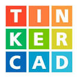

01
HTML semántico
Estructura con header, nav, main, section, article y footer. Listas, tablas, imágenes, video y navegación con anclas.
Curso de desarrollo web · RollingCode School
Soy Juan Pablo Rearte (Yiyo), de Tucumán. Acá junté los proyectos que hice durante el curso de RollingCode: desde mi primera página con etiquetas sueltas hasta una tienda con Bootstrap. Están en orden, para que se vea cómo fui avanzando.
01
Estructura con header, nav, main, section, article y footer. Listas, tablas, imágenes, video y navegación con anclas.
02
Inputs de texto, email, fecha, radio, checkbox, select y textarea, con validación nativa (required, minlength, maxlength).
03
Selectores, box model, position (relative, absolute, fixed), Flexbox, filtros, transiciones y media queries.
04
Navbar responsive con menú colapsable, grilla y componentes, tanto por CDN como con los archivos descargados.
 loading="lazy"
/>
loading="lazy"
/>
Sitio de varias páginas con los materiales para el TP de Laboratorio de Electrónica 1, más un formulario de registro completo.

Galería de imágenes con Flexbox, degradados y un efecto de desenfoque que se va al pasar el mouse.

El desafío final de mi curso de Arduino, que documenté en HTML: un portón automático con Arduino, servo, sensor IR y pantalla LCD.